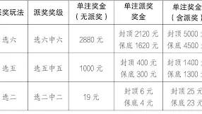

1
社群熱門
台灣即時熱搜
彭文正
-
竟稱「不惜代價推動兩岸和平統一」! 前知名深綠媒體人驚爆重大轉折
Yahoo新聞
-
前「深綠」媒體人轉向支持兩岸和平統一- 中國
大公文匯網
7
自由時報
9
重陽節

10 200+ 次搜尋網路溫度計 熱門話題
台灣社群排行
Social Lab（OpView 社群口碑資料庫）每週彙整各平台熱門事件。榜上的數據以圖表呈現， 這裡列出每週彙整的標題與觀測期間，點進去看完整排行。
 PTT
PTT
-
長崎市長稱台灣在邀請對象之外！ 李逸洋：主動爭取就該受辱是什麼邏輯？｜PTT熱門事件
08/10–08/16
-
EZ WAY個資風波署長3點澄清！ 疫苗接種後死亡再次引發討論｜PTT熱門事件
08/03–08/09
-
八卦版禁三立相關媒體？ 台股單日漲點創歷史新高！｜PTT熱門事件
07/27–08/02
 Facebook
Facebook
-
鞭刑公投提案通過廢死團體急反對！ 立法院59：51通過凍卓榮泰薪水｜Facebook熱門事件
08/10–08/16
-
賴清德轟盧秀燕：台中已8年原地踏步 豬瘟食安也守不住｜Facebook熱門事件
08/03–08/09
-
國民黨主席鄭麗文親中路線引關注 徐佳青轟蔣萬安比馬英九1.0還不如｜Facebook熱門事件
07/27–08/02
 Dcard
Dcard
-
老婆有鬼要攤牌問還是裝不知道 網友：收集證據 準備提離婚｜Dcard熱門事件
08/10–08/16
-
36歲讓女友懷孕但是還想要自由 網友批：最渣的那種｜Dcard熱門事件
08/03–08/09
-
起承轉蛤兄弟丼劇情讓網友傻眼 S2O玩回來真的中獎長菜花？｜Dcard熱門事件
07/27–08/02
 Instagram
Instagram
 Mobile01
Mobile01
-
台中持刀反被打趴不治家屬提告！ 沈伯洋提捷運站可洗澡政見引網友熱議｜Mobile01熱門事件
08/10–08/16
-
美國攻不下伊朗戰況膠著！ 國道3號爆胎釀死亡車禍 用路人該引以為鑑｜Mobile01熱門事件
08/03–08/09
-
ROG電競筆電頂規全開 售價曝光網友直呼傻眼｜Mobile01熱門事件
07/27–08/02
-
【udn video】考試快遲到遇韌性演習！婦人崩潰喊：我怎麼知道演習｜YouTube熱門事件
08/10–08/16
-
【見習網美小吳】無計劃突擊溫哥華好友一家 好友人竟不在溫哥華？｜YouTube熱門事件
08/10–08/16
-
【中天新聞】台灣機器狗需花7秒站起 與2024年珠海航展的中國機器狗差在哪裡？｜YouTube熱門事件
08/10–08/16
-
卓榮泰薪資確定遭凍？ 民眾黨棄權鞭刑公投一票之差成案｜新聞熱門事件
08/10–08/16
-
晶華滾床案二審蔡玉真淚崩 駐日內瓦處長遭檢舉濫用公帑、職場霸凌？｜新聞熱門事件
08/03–08/09
-
張景森收回氣話不退黨要留黨察看？ 高市致謝漏台灣被日網友灌爆留言｜新聞熱門事件
07/27–08/02
-
小S憶當年與大S拼命工作 李洋生日感性致謝：有你們在真好
08/10–08/16
-
蔡英文：人民不必只信單一政黨但要信專業 林志玲兒子下廚做Pizza慶父親節
08/03–08/09
-
林心如結婚10週年甜曬閃照 黃大謙遇葡萄牙最瘋慶典大開眼界？
07/27–08/02
-
小S懷念拼命工作賺錢的歲月 周杰倫甜曬為昆凌慶生的浪漫燭光晚餐
08/10–08/16
-
小白貓的忍術隱身術？ 李多慧攜辣媽同框拍片網友讚：媽媽像姐姐
08/03–08/09
-
黃大謙瘋玩葡萄牙互敲慶典？ 賤葆鐵鎚爬腳挑戰網笑：文藝復興
07/27–08/02
 YouTube 意見領袖
YouTube 意見領袖
-
夠維根冷凍馬鈴薯沾醬超美味 阿滴強迫症發作英航歷險終於完結？
08/10–08/16
-
咖波終極組合技出招！ 鐵道迷酷的夢挑戰72小時火車環島
08/03–08/09
-
錫蘭：說感謝還封鎖什麼邏輯？ 183公分美國女孩定居台灣的原因？
07/27–08/02
人氣意見領袖 TOP 3
Social Lab 依社群聲量統計的各平台人氣意見領袖前三名。
Bluesky 熱門話題
Bluesky 的全站熱門話題，以英語圈的娛樂、體育、政治為主，僅供參考。
Public backlash grows against AI data centers
19,891 篇
US national debt tops $40 trillion
6,587 篇
Natalie Harp's letters to Trump
5,387 篇
Debate over "spreadsheet people"
3,635 篇
Trump allows tariff-free beef imports
2,470 篇
Supreme Court ballroom case
2,296 篇
Flock surveillance cameras face backlash
1,264 篇
Gary, Indiana lacks power after storm
968 篇
Stars and Stripes staff departures
647 篇
Food safety outbreaks spread across US
639 篇
Trump threatens military bond intervention
444 篇
Trump campaigns for Graham in SC
336 篇